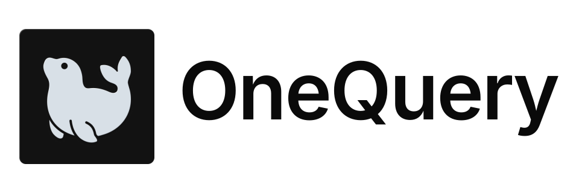
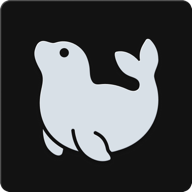

<!doctype html>
<html lang="en">
  <head>
    <meta charset="utf-8" />
    <meta name="viewport" content="width=device-width, initial-scale=1" />
    <link rel="stylesheet" href="./styles.css" />
  </head>
  <body>
    <script type="module">
      import { grid, renderPage, section } from "./components.js";

      renderPage({
        title: "Brand Logo",
        description:
          "Use the shipped icon and generated lockup assets as the source of truth. The whale mark should not be redrawn, recolored, or separated from its approved tile.",
        sections: [
          section({
            title: "Horizontal lockup",
            description: "Use for docs, README hero areas, presentations, and product introductions.",
            content: '<div class="oq-logo-preview"><span class="oq-code">../assets/logo.svg</span></div>',
          }),
          section({
            title: "App icon exports",
            description: "Use the compact icon when the brand name is nearby or when the surface is small.",
            content: grid([
              '<div class="oq-logo-preview"><span class="oq-code">icon-512.png</span></div>',
              '<div class="oq-logo-preview"><span class="oq-code">icon-192.png</span></div>',
              '<div class="oq-logo-preview"><span class="oq-code">apple-touch-icon.png</span></div>',
            ]),
          }),
        ],
      });
    </script>
  </body>
</html>
